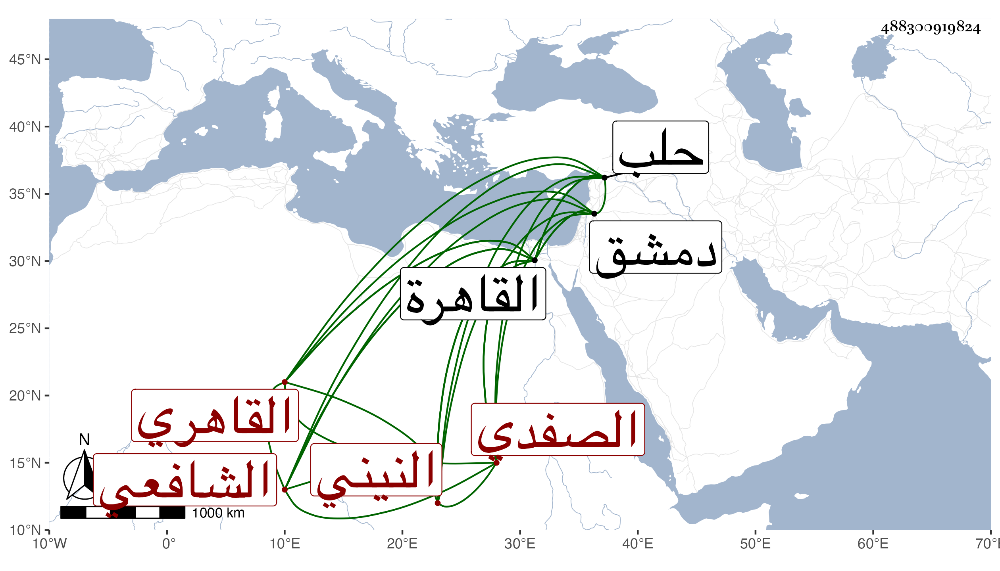

0902Sakhawi.DawLamic.ITO20230111-ara1.EIS1600.488300919824
Biography ID: 488300919824
377
عمر بن عمر بن أبي بكر السراج أو الزين الصفدي ثم النيني بنونين أولهما مفتوحة بينهما تحتانية ثم القاهري نزيل المنكوتمرية الشافعي . أجاز لابن شيخنا وغيره في سنة اثنتين وعشرين ولقي الزين رضوان وقال أنه كان فاضلا أخبر بسماعه لصحيح مسلم على البدر بن قواليح ولغير ذلك ، وذكره شيخنا في إنبائه فقال : اشتغل قديما ومهر حتى صار يستحضر الكفاية لابن الرفعة وأخذ عن العلاء حجي وأنظاره بدمشق وسمع من ابن قواليح وناب في الحكم في عدة بلاد من معاملات حلب ثم قدم القاهرة قبل عشرين سنة وتنزل في طلبة الشافعية بالمؤيدية . ومات بالقاهرة في جمادى الأولى سنة ست وعشرين وقد قارب الثمانين فأنه ذكر لي أن مولده في حدود الخمسين وكان كثير التقتير على نفسه ووجد له مبلغ فوضع بعضهم يده عليه ولم يصل لوارثه منه شيء عفا الله عنه .
